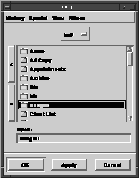

Confirm Dialog
Use the Confirm class to create special purpose dialogs often referred to as confirms. Confirms typically accept or reject the setting of properties contained within a dialog. For example, if the application is a terminal emulator, a confirmation dialog might be used for setting the communication speed and other communication values. The Confirm class provides a set of standard buttons that allow the user to accept, reject, revert to defaults, or request help. The application can control what buttons are visible for a given confirmation dialog, and take the appropriate action if the user accepted, rejected, or requested a return to the default values. Further, the Confirm class respects look-and-feel requirements with this single API. Figure 7 illustrates a typical confirmation dialog.
Figure 7. A typical confirmation dialog

In its basic form, a confirmation dialog provides the functionality for acceptance or rejection. With single API calls the application developer can add standard buttons for reverting to defaults and requesting help. Additional standard buttons, providing duplicate functionality with slightly different behavior, can also be added. Standard confirmation buttons are explicitly maintained by the Confirm class.
Advanced users of the Confirm class can add their own generic buttons, change the title or order of the confirmation buttons, and arrange the buttons either horizontally or vertically. The application developer is responsible for maintaining the attributes of any generic buttons added to a confirmation dialog. Advanced use of the Confirm class is discussed in detail later in this document.
Hook methods are used to notify the application that some action has occurred related to the confirmation dialog. Four standard hook methods¯apply, reset, set defaults, and help¯are available for accepting changes, rejecting changes, reverting to some default state, or requesting help. A hook method, unlike a notification method, returns a value indicating the success or failure of its task. For confirmation hook methods, the value returned indicates whether the confirmation should carry on as normal (possibly close the confirm) or halt normal processing and leave the confirm in its current state (most importantly, leave the confirm open).
The different buttons available from different look-and-feels call one of these four hook methods. A default confirmation dialog will only use the apply and reset hooks. The defaults and help hook will only be used if the appropriate standard button is turned on.
The four hook functions map to an apply, reset, defaults, or help action. Apply indicates that all changes made in the confirm should be applied as defined by the application. Reset indicates that all changes made since the last apply should be ignored, and the dialog should be set to its last applied state. Defaults is an optional hook method; it indicates that the state of the confirm should be reset to its original "factory" setting. Help is another optional hook method which indicates the user has pressed the Help button in the confirmation dialog. A default help hook function automatically dispatches a help command.
The set of standard buttons available to the application developer is customizable. The default set of buttons for Motif and Windows is OK and Cancel. For OPEN LOOK, a single Apply button appears by default. (The pushpin, which is automatically attached to an OPEN LOOK confirmation dialog, performs the operation of dismissing the confirmation dialog.) Optional buttons that may be enabled for a confirmation dialog are Apply (Motif), Reset (all look-and-feels), Defaults (all look-and-feels), and Help (all look-and-feels). Notice that inappropriate buttons, such as an OK button under OPEN LOOK, are automatically blocked by the Confirm class. Using the Confirm class always provides the user with full functionality while maintaining look-and-feel independence.
In addition to application notification, the Confirm class also automatically takes care of dismissing the confirmation dialog. For example, when the OK button is pressed under Motif, the application receives an Apply notify, and then the Confirm class closes the dialog. However, if the application detects an error situation, the closing of the confirm may be blocked. The closing of the confirm is determined by the hook method which returns TRUE (all went well, close the window) or FALSE (something went wrong, leave the window open). See the vconfirm section in the Galaxy Application Environment Reference Manual for more details.
The Confirm class provides an attribute which disables a button when no hook method exists for it. For example, if your confirm contains a reset button but your application has not set a reset hook method (via SetResetHook), the Reset button will be disabled; the user will not be able to activate it. Under MOTIF, all buttons can be disabled except OK and Cancel. These buttons are necessary to dismiss a confirm. (It is possible to get all disabled buttons under OPEN LOOK, however the confirm can still be dismissed by pulling out the pushpin.) To enable this attribute use SetDisabledButtons.
Figure 8. OK button
The OK button is available for all look-and-feels. However, under OPEN LOOK, the title of the default OK button is named "Apply" by the Confirm class. Consequently, a button with the tag vname_OK is always available, unless explicitly removed from an application. The OK button closes the window after the application is notified. This button is required and is placed by default in the confirmation dialog in all look-and-feels.
Figure 9. Cancel button
The Cancel button is not available under the OPEN LOOK look-and-feel. In the other look-and-feels, the Cancel button closes the window after the application is notified. This button is required and is placed by default in the confirmation dialog in all look-and-feels except OPEN LOOK. Consequently, a button with the tag vname_Cancel is always available (except for OPEN LOOK), unless explicitly removed from an application.
Figure 10. Apply button
The Apply button is optional for all look-and-feels except OPEN LOOK, where it is not available.The Apply button does not close the window, but it can be closed using the Cancel or OK buttons or a window class specific close control. The Apply button has the tag vname_Apply.
Figure 11. Reset button
The Reset button is available under all look-and-feels. In OPEN LOOK, the pushpin in the window header determines if the window will be closed. If the window is pinned, the window will not be closed; otherwise, the window will be closed. In other look-and-feels, the window is not closed, but it can be closed using the Cancel or OK buttons or a window class specific close control. This button is optional under all look-and-feels. The Reset button has the tag vname_Reset.
Figure 12. Defaults button
The Defaults button is available under all look-and-feels. In OPEN LOOK, the pushpin in the window header determines if the window will be closed. If the window is pinned, the window will not be closed; otherwise, the window will be closed. In the other look-and-feels, the window is not closed, but it can be closed using the Cancel or OK buttons or a Window class specific close control. This button is optional for all look-and-feels. The Defaults button has the tag vname_Defaults.
Figure 13. Help button
The Help button is available under all look-and-feels. The Help button activates the help system. This button is optional for all look-and-feels and is not placed in the confirmation dialog by default. The confirmation dialog is typically not closed when this button is pressed. Use SetHelp to provide a Help button. The Help button has the tag vname_Help.
A confirmation dialog can be treated as any other dialog. The bottom or right portion of the dialog is reserved for the confirmation items. The height or width of these items is included in the minimum size calculated by vdialogCalcMinSize. Dialog class calls for adding dialog items or manipulating the dialog can be made using GetDialog as the dialog parameter to Dialog class calls. Note that for Motif/Windows, the Confirm outline is drawn outside of the dialog's rectangle.
Before using these advanced features it is important to understand how the Confirm class manages its buttons. The buttons themselves are actually of the vconfirmButton class, a subclass of vbutton. The behavior of the vconfirmButton class is not exported beyond the fact that it is a subclass and may be retrieved using ButtonGetDefaultClass.
Confirm buttons are not stored in the confirm's (dialog's) item list. Instead, a container item is used to group these buttons making the buttons part of the container's item list. This container may be retrieved from the confirmation dialog using GetContainer. (See the Container chapter for more on using containers.)
Any of the standard buttons, as well as generic buttons, may be retrieved from the container's item list. Each standard button has a unique, predefined tag. Each generic button must have a unique tag assigned by the application. Table 10 lists the standard buttons and their associated tag. (Note that some buttons may not be available in all look-and-feels. For example, the Apply and Cancel buttons do not appear under OPEN LOOK.)
Standard Buttons
This section describes all available confirmation buttons and their action and behavior.
Creating and Implementing a Confirmation Dialog
To create a confirmation dialog call Create or use a resource function to read the dialog in from a resource file created by the Visual Resource Builder . The latter approach is more convenient, but the former approach is demonstrated here in order to more completely illustrate the Confirm class entry points. Sample Code
The confirm1 example (located in your Galaxy distribution under samples/docsamps) illustrates a typical implementation of a confirmation dialog. The base dialog has two buttons, one to open the confirmation dialog, the other to exit. The confirmation dialog has three toggle items in addition to the buttons maintained by the Confirm class. The example demonstrates three common uses of the Confirm class. First, it shows how to make use of the apply and reset hook functions. Second, it demonstrates how to handle an error situation in the apply hook. Third, it shows how to destroy both application data and the confirmation dialog itself anytime the confirmation dialog is closed. Non-standard Confirmation Buttons
The Confirm class provides advanced functionality for applications that demand it. An application may require non-standard buttons that are not available from the provided standard buttons. The application can then add generic buttons to the list of confirmation buttons managed by the Confirm class.
| Button | Tag |
|---|---|
| OK | vname_Ok |
| Apply | vname_Apply |
| Reset | vname_Reset |
| Cancel | vname_Cancel |
| Defaults | vname_Defaults |
| Help | vname_Help |
Use the tag name to retrieve the button. For example, use the following statement to retrieve the OK button from the container item list of the confirmation dialog:
- okButton = (vbutton *) vconfirmGetButton(confirm, vname_Ok);
A generic button can be added to the confirm's button list using SetGeneric which takes three parameters, the confirm, a unique tag, and a flag indicating whether the button is to be added or removed.
The order of the buttons in the container's item list is important. It determines the order in which the buttons will be displayed. The set of standard buttons is automatically ordered according to look and feel specifications by the Confirm class. Any generic buttons defined by an application will appear after the standard buttons in the order they were added. To change the ordering of buttons, the application should subclass the confirmation dialog and override the ORDER_BUTTONS method. This method arranges the buttons within the container's item list as determined by the application. Any default confirm button (for the dialog) or default abandon buttons should also be set using this method. For details on creating subclasses, see the Class Manager.
Blocking Confirmation Dialogs
A blocking confirm is a modal confirmation dialog that blocks when opened. Special blocking calls must be made to process a blocking confirm. The typical open, hook, and close functions cannot be used. When using a blocking confirm, the statement after the call to process the confirm is not executed until the user actually presses a button. The tag of the button pressed by the user is returned by the call that processes the confirm. Note that the other notify functions and draw methods are called as with any confirmation dialog.
For the convenience of the application developer, four blocking calls are provided:
- Process
- ProcessStart
- ProcessGet
- ProcessStop
Process is intended to be used alone. When called, it opens the confirmation dialog and waits for a button to be selected. Once a button is selected the confirm is closed and the tag of the selected button is returned. Use this method when the application merely needs to determine which button has been pressed. The confirmation dialog closes regardless of the button selected.
The other three blocking confirmation methods are used to keep a confirmation dialog open even after a button is pressed. This allows the user to make several selections before closing the confirmation dialog. These three functions provide this capability without continually opening and closing the confirmation dialog (as would be necessary with Process). ProcessStart opens the confirm and does not block. ProcessGet waits until a confirm button is selected and returns the tag of that button. It does not close the confirmation dialog and must be between calls to ProcessStart and ProcessStop. ProcessStop closes the confirmation dialog and must be called after a call to ProcessStart.
A blocking confirm differs from a typical confirm in several ways. First, any function registered as a confirmation hook function is not called when a button is pressed. The tag of the selected button is returned and it is the application's responsibility to handle the return directly. Second, the confirmation dialog is set to be modal, no input is accepted by other application windows. Third, the confirmation dialog's close hook is not called since the application is explicitly controlling when the confirm is to be closed.
Advanced Sample Code
The confirm2 example (located in your Galaxy distribution under samples/docsamps) demonstrates the following:
- Subclassing a confirm
- Using generic buttons in a confirmation dialog
- Using blocking confirms
- Ordering buttons
Table of Contents
Help Map
Need help? Contact Visix.